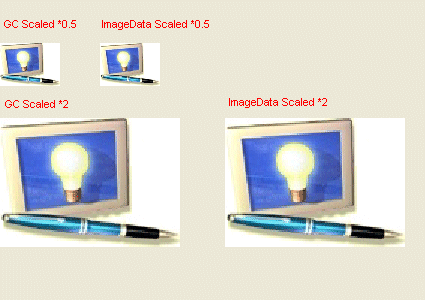
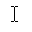
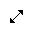

| Eclipse Corner Article |
Summary
SWT's Image class can be used to display images in a GUI. The most common source of images is to load from a standard file format such as GIF, JPEG, PNG, or BMP. Some controls, including Buttons and TreeItems, are able to display an Image directly through the setImage(Image) method, but any control's paint event allows images to be drawn through the callback's graphic context. SWT's ImageData class represents the raw data making up an SWT Image and determines the color for each pixel coordinate. This article shows the correct uses of ImageData and Image, shows how to load images from files, and how to achieve graphic effects such as transparency, alpha blending, animation, scaling, and custom cursors.By Joe Winchester, IBM
September 10th, 2003
This first section of this article gives an introduction to colors and shows how an image records the color value of each pixel.
The next section describes image transparency, alpha blending, animation, and how to scale images. Finally, the article shows how to create cursors from images, by using a source image together with a mask.Image image = new Image(display,
"C:/eclipse/eclipse/plugins/org.eclipse.platform_2.0.2/eclipse_lg.gif");
Instead of hard-coding the location of the image, it's more common to load the Image from a folder location relative to a given class. This is done by creating an InputStream pointing to the file with the method Class.getResourceAsStream(String name), and using the result as the argument to the constructor Image(Display display, InputStream inputStream).
The Eclipse package explorer below shows the class com.foo.ShellWithButtonShowingEclipseLogo and the eclipse_lg.gif in the same folder. To following code would load the graphic from its location relative to the class.
Image image = new Image(display,
ShellWithButtonShowingEclipseLogo.class.getResourceAsStream(
"eclipse_lg.gif"));

Once the image has been created it can be used as part of a control such as a Button or Label that is able to render the graphic as part of their setImage(Image image) methods.
Button button = new Button(shell,SWT.PUSH);
button.setImage(image);

Images can be drawn onto using a graphics context that is created with the constructor GC(Drawable drawable) with the Image as the argument.
GC gc = new GC(image);
gc.setForeground(display.getSystemColor(SWT.COLOR_WHITE));
gc.drawText("I've been drawn on",0,0,true);
gc.dispose();

Using a GC to draw onto an Image permanently alters the graphic. More information on how to use a GC is covered in the article Graphics Context - Quick on the draw.
As well as loading an Image directly from a file, you can separately create the ImageData object and then construct the Image using Image(Device device, ImageData imageData). The data for an existing Image can be retrieved using getImageData(), although this will not be the same object that was used to create the image. This is because when preparing an image to be drawn onto a screen, properties such as its color depth might be different from the initial image data.
Instances of Image represent an underlying resource that has been prepared for a specific device and they must be disposed when they are no longer required to free up the allocated resource. There is no finalization of resources in SWT when an object is garbage collected. For more information see SWT: The Standard Widget Toolkit: Managing Operating System Resources.
The next section describes how colors are represented by their RGB values, and how PaletteData maps a map pixel value to a particular color.
Color cyanColor = new Color(display,0,255,255);
// ... Code to use the Color
cyanColor.dispose();
The convenience class org.eclipse.swt.graphics.RGB exists in SWT that combines a color's red, green and blue values into a single object.
RGB cyanRGB = new RGB(0,255,255);
Color cyanColor = new Color(display,cyanRGB);
// ... Code to use the Color
cyanColor.dispose();
The Color instance should be disposed when it is no longer required, whereas the RGB has no need to be disposed. This is similar to the relationship between an Image and its ImageData, where Color and Image are device specific objects using underlying native resources, while RGB and ImageData are the underlying model data.
To avoid having to create and manage instances of the commonly used colors, the Display class allow these to be retrieved using the method Display.getSystemColor(int id).
Color cyanColor = display.getSystemColor(SWT.COLOR_CYAN)
When a Color is obtained by an SWT program using the method Display.getSystemColor(int id) method, it must not be disposed. The rule of thumb that works for any SWT resource is "If you created it, you are responsible for disposing it". Because the statement above retrieved the cyan color instance, and didn't explicitly construct it, it should not be disposed.
How a Color is actually represented on the display depends on factors such as the resolution and depth of the display. For more information on this and the SWT color model see SWT Color Model.
The example below is a 48 by 48 square image created with a depth of 1, and
an indexed color palette. The indexed palette assigns  0 to be red and 1 to be green (by virtue of their order in the RGB[] in the
constructor). The ImageData's un-initialized pixel values will initially be
0 (red), and two for loops
0 to be red and 1 to be green (by virtue of their order in the RGB[] in the
constructor). The ImageData's un-initialized pixel values will initially be
0 (red), and two for loops  set a 34 by 34 square in the center of the ImageData to be 1 (green).
set a 34 by 34 square in the center of the ImageData to be 1 (green).
 PaletteData
paletteData = new PaletteData(
PaletteData
paletteData = new PaletteData(
new RGB[] {new RGB(255,0,0), new
RGB(0,255,0)});
ImageData imageData = new ImageData(48,48,1,paletteData);
 for(int
x=11;x<35;x++){
for(int
x=11;x<35;x++){
for(int y=11;y<35;y++){
imageData.setPixel(x,y,1);
}
}
Image image = new Image(display,imageData);

The above example has a depth of 1 so it can store 2 colors, but as the color depth of the ImageData increases then so can the number of colors in the palette. An indexed palette can have a 1, 2, 4, or 8 bit depths, and an 8 bit depth provides 2^8 = 256 possible colors. To have a higher color depth (such as 16, 24, or 32) a direct palette must be used.

The value for each pixel represents a combination of the red, green and blue
components into a single 24 bit integer. To construct an indexed palette the
constructor used  allows
the red, green and blue color masks to be specified.
allows
the red, green and blue color masks to be specified.
 PaletteData palette =
new PaletteData(0xFF , 0xFF00 , 0xFF0000);
PaletteData palette =
new PaletteData(0xFF , 0xFF00 , 0xFF0000);
ImageData imageData = new ImageData(48,48,24,palette);
Using the same technique as earlier, the code iterates over every pixel coordinate
setting it to either  0xFF (for red) or
0xFF (for red) or  0xFF00
(for green).
0xFF00
(for green).
for (int x=0;x<48;x++){
for(int y=0;y<48;y++){
if(y >
11 && y < 35 && x > 11 && x < 35){
 imageData.setPixel(x,y,0xFF00); // Set the
center to green
imageData.setPixel(x,y,0xFF00); // Set the
center to green
} else {
imageData.setPixel(x,y,0xFF); // and
everything else to red
 }
}
}
};
Image image = new Image(display,imageData);
This creates the result below where the image is red with a green center.

Because you can use color depths of 16, 24 and 32 bits with direct palettes, you can represent more colors than are available with an indexed palette whose maximum depth is 8. A color depth of 24 allows you to represent 16 million colors (2^24). The tradeoff however is size, because an indexed palette with a depth of 8 requires one byte per image coordinate whereas a direct palette with a depth of 24 requires three bytes per image coordinate.
With both direct and indexed palettes you can go from an RGB to a pixel value and vice-versa using the public methods int getPixel(RGB rgb) and RGB getRGB(int pixelValue).
When Images are used directly on controls such as Button or Label the native behavior may be that transparent pixels are ignored and drawn in the pixel color specified by the source. Native image transparency however is supported in SWT for operations involving a GC. To illustrate this the following file Idea.gif has a color depth of 8, and the white pixel (index 255 in the palette) set to be the transparent pixel.

The shell below has a Label on the left with a Canvas next to it. The
Idea.gif is used  as the
label's image, and also in the paint event
as the
label's image, and also in the paint event  of the Canvas. Because the Label does not support native transparency the
original white color of the transparent pixel is used as the background, however
the GC in the paint event respects the transparent pixel and the grey background
shows through.
of the Canvas. Because the Label does not support native transparency the
original white color of the transparent pixel is used as the background, however
the GC in the paint event respects the transparent pixel and the grey background
shows through.
Image ideaImage = new
ImageData(getClass().getResourceAsStream("Idea.gif"));
Label label = new Label(shell,SWT.NONE);
 label.setImage(ideaImage);
label.setImage(ideaImage);
Canvas canvas = new Canvas(shell,SWT.NO_REDRAW_RESIZE);
canvas.addPaintListener(new PaintListener() {
public void
paintControl(PaintEvent e) {
 e.gc.drawImage(ideaImage,0,0);
e.gc.drawImage(ideaImage,0,0);
}
});

For the above example I stacked the deck in my favor, because I didn't actually use the idea graphic that is included with eclipse articles in their banner. The reason is that the original graphic is a JPG file which doesn't support transparency, so I used a graphics tool to convert it to a GIF and set the value of the white pixel in the palette to be the transparency pixel. The original Idea.jpg is shown below, and although it looks the same as the Idea.gif, this is because it is on the white background of the HTML browser.
By using the original JPG file this offers a good example of how we to achieve a transparency effect progrmatically by manpulating its ImageData. The ImageData class has a public field transparentPixel to specify which pixel is transparent that can be set once a persisted image file is loaded into an ImageData instance, irrespective of whether the persisted file format supports transparency.
The code below loads the Idea.jpg file in an ImageData object and  sets the transparent pixel for the ImageData to be the pixel value of the color
white in the palette. The pixel value in the indexed palette that represents
white is retrieved
sets the transparent pixel for the ImageData to be the pixel value of the color
white in the palette. The pixel value in the indexed palette that represents
white is retrieved  by
using getPixel(RGB). The manipulated ImageData is used to create an Image
transparentIdeaImage that now has the white pixel value specified to be
transparent.
by
using getPixel(RGB). The manipulated ImageData is used to create an Image
transparentIdeaImage that now has the white pixel value specified to be
transparent.
ImageData ideaData = new ImageData(
getClass().getResourceAsStream("Idea.jpg"));
 int whitePixel =
ideaData.palette.getPixel(new RGB(255,255,255));
int whitePixel =
ideaData.palette.getPixel(new RGB(255,255,255));
 ideaData.transparentPixel = whitePixel;
ideaData.transparentPixel = whitePixel;
Image transparentIdeaImage = new Image(display,ideaData);
Next a Shell uses the newly created image  in a native Label and also in the paint event
in a native Label and also in the paint event  of a Canvas. A Windows Label does not support native transparency so it still
appears with a white background, however the GC for the Canvas uses the existing
background color whenever a white pixel is encountered in the source image, so
the image appears as transparent.
of a Canvas. A Windows Label does not support native transparency so it still
appears with a white background, however the GC for the Canvas uses the existing
background color whenever a white pixel is encountered in the source image, so
the image appears as transparent.
Label transparentIdeaLabel = new
Label(shell,SWT.NONE);
 transparentIdeaLabel.setImage(transparentIdeaImage);
transparentIdeaLabel.setImage(transparentIdeaImage);
Canvas canvas = new Canvas(shell,SWT.NONE);
canvas.addPaintListener(new PaintListener() {
public void
paintControl(PaintEvent e) {
 e.gc.drawImage(transparentIdeaImage,0,0);
e.gc.drawImage(transparentIdeaImage,0,0);
}
});
As can be seen from the second of the two images (drawn on the Canvas with the white pixel set to transparent), there are still some patches of white. Closer analysis reveals that this is not a bug, but that these regions are not pure white (255,255,255), but are slighly off-white (such as 255,254,254). The transparent pixel of an ImageData can only be used for a single value. This now presents the next problem to be solved - locate all of the off-white pixels in the ImageData and convert them to pure-white. To do this we will iterate over each pixel in the image data and modify those that are close to white to be pure white.
The first step is to load the image and then iterate over each pixel individually looking at its color. Because Idea.jpg is using a direct palette, the pixel value is an int that contains the red, green and blue component as masked bit areas. These mask value can be obtained from the palette.
ImageData ideaImageData = new ImageData(
getClass().getResourceAsStream("Idea.jpg"));
int redMask = ideaImageData.palette.redMask;
int blueMask = ideaImageData.palette.blueMask;
int greenMask = ideaImageData.palette.greenMask;
For any pixel value we can bitwise AND it with the mask to see what the color component is. The red component is the low order bits so this will be the actual value (from 0 to 255), however the green and blue values need adjusting as they are the high order bits in the pixel value. To make this adjustment the color component can be bit shifted to the right using the >> operator. If you are writing generic code to do this kind of manipulating, take care that direct palettes for color depths of 24 or 32 store their color components with red being the low order bits, however for color depth of 16 the colors are reversed and red is high order with blue being low order. The reason for this is to be the same as how Windows stores images internally so there is less conversion when creating the image.
Two for loops will iterate over the imageData. The first is traversing the
image from top to bottom a line at a time, and  creates an int[] to hold each line of data. The method
ImageData.getPixels(int x, int y, int getWidth, int[] pixels, int startIndex)
is used
creates an int[] to hold each line of data. The method
ImageData.getPixels(int x, int y, int getWidth, int[] pixels, int startIndex)
is used  to extract a
line at a time from the imageData's bytes. The API for this method is slightly
irregular, because rather than returning the resulting data it instead is
declared as void, and the resulting pixel data is injected into the
int[] that is passed in as a method argument. The int[] of pixels is then
iterated over and each value has its
to extract a
line at a time from the imageData's bytes. The API for this method is slightly
irregular, because rather than returning the resulting data it instead is
declared as void, and the resulting pixel data is injected into the
int[] that is passed in as a method argument. The int[] of pixels is then
iterated over and each value has its  red,
red,  green and
green and  blue component extracted. The desired effect we want is to determine whether the
pixel is off-white and if so to make it pure white - a rule that works well is
to assume that anything whose red and green component are higher than 230
blue component extracted. The desired effect we want is to determine whether the
pixel is off-white and if so to make it pure white - a rule that works well is
to assume that anything whose red and green component are higher than 230  and blue component higher than 150 is an off-white.
and blue component higher than 150 is an off-white.
 int[] lineData = new
int[ideaImageData.width];
int[] lineData = new
int[ideaImageData.width];
for (int y = 0; y < ideaImageData.height; y++) {
 ideaImageData.getPixels(0,y,width,lineData,0);
ideaImageData.getPixels(0,y,width,lineData,0);
// Analyze
each pixel value in the line
for (int x=0;
x<lineData.length; x++){
//
Extract the red, green and blue component
int
pixelValue = lineData[x];
 int r = pixelValue & redShift;
int r = pixelValue & redShift;
 int g = (pixelValue & greenShift) >> 8;
int g = (pixelValue & greenShift) >> 8;
 int b = (pixelValue & blueShift) >> 16;
int b = (pixelValue & blueShift) >> 16;
 if (r > 230 && g > 230 && b > 150){
if (r > 230 && g > 230 && b > 150){
ideaImageData.setPixel(x,y,0xFFFFFF);
}
}
};
Having manipulated the raw bytes making up the ImageData we have now successfully changed the off-white values to pure white.
ImageLoader imageLoader = new ImageLoader();
imageLoader.data = new ImageData[] {ideaImageData};
imageLoader.save("C:/temp/Idea_PureWhite.jpg",SWT.IMAGE_JPEG);
The finished result is shown below.

It doesn't look much different to the original Idea.jpg because it is drawn on a white background, but when it is drawn on a Canvas with the white pixel set to be the transparent pixel the background shows through achieving the desired effect.
ImageData pureWhiteIdeaImageData =
new ImageData("C:/temp/Idea_PureWhite.jpg");
 pureWhiteIdeaImageData.transparentPixel =
pureWhiteIdeaImageData.transparentPixel =
pureWhiteIdeaImageData.palette.getPixel(new RGB(255,255,255));
final Image transparentIdeaImage = new
Image(display,pureWhiteIdeaImageData);
Canvas canvas = new Canvas(shell,SWT.NONE);
canvas.addPaintListener(new PaintListener() {
public void
paintControl(PaintEvent e) {
e.gc.drawImage(transparentIdeaImage,0,0);
}
});

 It might seem odd that in
the above code that after loading the Idea_PureWhite.jpg file
It might seem odd that in
the above code that after loading the Idea_PureWhite.jpg file  the transparent pixel was set to be white. Why not set the transparent pixel
before we used the ImageLoader to create the persisted Idea_PureWhite.jpg file?
The reason is that the JPEG image file format does not support transparency. A
GIF file supports native transparency, however changing the file type to
SWT.IMAGE_GIF on the ImageLoader would not have worked, because GIF supports a
maximum image depth of 8 and uses an indexed palette, whereas the JPEG has an
image depth of 24 and a direct palette. To convert between the two formats would
require analyzing the colours used by the JPEG to create the best fit 256 color
palette, before iterating over each JPEG pixel value and creating the GIF image
data by finding the closest color. Doing this conversion is outside the scope of
this article, although it can be done by most commercial graphics tools. To
match pixel values as the color depth decreases from 24 to 8 involves algorithms
that find the right color match for a block of pixels rather than a single pixel
value, and is why image quality can sometimes be reduced when switching between
different formats.
the transparent pixel was set to be white. Why not set the transparent pixel
before we used the ImageLoader to create the persisted Idea_PureWhite.jpg file?
The reason is that the JPEG image file format does not support transparency. A
GIF file supports native transparency, however changing the file type to
SWT.IMAGE_GIF on the ImageLoader would not have worked, because GIF supports a
maximum image depth of 8 and uses an indexed palette, whereas the JPEG has an
image depth of 24 and a direct palette. To convert between the two formats would
require analyzing the colours used by the JPEG to create the best fit 256 color
palette, before iterating over each JPEG pixel value and creating the GIF image
data by finding the closest color. Doing this conversion is outside the scope of
this article, although it can be done by most commercial graphics tools. To
match pixel values as the color depth decreases from 24 to 8 involves algorithms
that find the right color match for a block of pixels rather than a single pixel
value, and is why image quality can sometimes be reduced when switching between
different formats.
We have shown how an ImageData is an array of int values representing each pixel coordinate, and how each pixel value is mapped to a color through the palette. This allowed us to iterate over the image data for the Idea.jpg, query pixel values that were close to white, and convert these to a pure white RGB value. The end result of this was that we were able to create the Idea_PureWhite.jpg file that can be used as a transparent JPG by setting the white pixel to be transparent. Transparency works by having a source pixel value (the image being drawn), a destination pixel value (the image being drawn onto) and a rule by which the resulting destination pixel value is determined. For transparency the rule is that the source pixel value is used unless it's transparent in which case the destination pixel is used. Another technique is to use alpha values that specify the weight applied to the source relative to the destination to create the final pixel value. This allows the blending between the source image and the existing background it is being drawn onto.
Shell shell = new Shell(display);
shell.setLayout(new FillLayout());
ImageData imageData = new
ImageData("C:/temp/Idea_PureWhite.jpg");
 final Image fullImage =
new Image(display,imageData);
final Image fullImage =
new Image(display,imageData);
imageData.alpha = 128;
 final Image halfImage =
new Image(display,imageData);
final Image halfImage =
new Image(display,imageData);
imageData.alpha = 64;
 final Image quarterImage
= new Image(display,imageData);
final Image quarterImage
= new Image(display,imageData);
Canvas canvas = new
Canvas(shell,SWT.NO_REDRAW_RESIZE);
canvas.addPaintListener(new PaintListener() {
public void
paintControl(PaintEvent e) {
e.gc.drawImage(fullImage,0,0);
e.gc.drawImage(halfImage,140,0);
e.gc.drawImage(quarterImage,280,0);
}
});

The following code creates  an alphaData byte[], and then has two loops. The outer loop y
an alphaData byte[], and then has two loops. The outer loop y  is from 0 to the imageData's height, and the inner loop
is from 0 to the imageData's height, and the inner loop  creates a byte[] for the width of the imageData and initializes it with
a value that increases from 0 for the top row through to 255 for the bottom row.
A System.arrayCopy
creates a byte[] for the width of the imageData and initializes it with
a value that increases from 0 for the top row through to 255 for the bottom row.
A System.arrayCopy  then
builds up the alphaData byte[] with each row.
then
builds up the alphaData byte[] with each row.
ImageData fullImageData = new
ImageData("C:/temp/Idea_PureWhite.jpg");
int width = fullImageData.width;
int height = fullImageData.height;
 byte[] alphaData = new
byte[height * width];
byte[] alphaData = new
byte[height * width];
 for(int
y=0;y<height;y++){
for(int
y=0;y<height;y++){
byte[] alphaRow = new
byte[width];
 for(int x=0;x<width;x++){
for(int x=0;x<width;x++){
alphaRow[x] = (byte) ((255 * y) /height);
}
 System.arraycopy(alphaRow,0,alphaData,y*width,width);
System.arraycopy(alphaRow,0,alphaData,y*width,width);
}
fullImageData.alphaData = alphaData;
Image fullImage = new Image(display,fullImageData);
The resulting image is shown below, and the alphaData byte[] makes the top of the image transparent and the bottom opaque, with a gradual fading between the two.
To create an effect based on an existing image and a style flag use the
constructor Image(Display display, Image image, int flag). The flag
argument is a static constant of either SWT.IMAGE_COPY, SWT.IMAGE_DISABLE or
SWT.IMAGE_GRAY. Copy creates a new image based on the original but with a copy
of its imageData, whereas Disable and Gray create a new image applying platform
specific effects. The following code shows the Idea.jpg, together with three
more images that we created using the style bits  IMAGE_DISABLE,
IMAGE_DISABLE,  IMAGE_GRAY and
IMAGE_GRAY and  IMAGE_COPY. To show that IMAGE_COPY creates a new image
IMAGE_COPY. To show that IMAGE_COPY creates a new image  a GC is used to draw onto it that affects only the copied image, not the
original.
a GC is used to draw onto it that affects only the copied image, not the
original.
Image ideaImage = new Image(display,
getClass().getResourceAsStream("/icons/Idea.jpg");
 Image
disabledImage = new Image(display,image,SWT.IMAGE_DISABLE);
Image
disabledImage = new Image(display,image,SWT.IMAGE_DISABLE);
 Image grayImage = new
Image(display,image,SWT.IMAGE_GRAY);
Image grayImage = new
Image(display,image,SWT.IMAGE_GRAY);
 Image copyImage = new
Image(display,ideaImage,SWT.IMAGE_COPY);
Image copyImage = new
Image(display,ideaImage,SWT.IMAGE_COPY);
 GC gc = new
GC(copyImage);
GC gc = new
GC(copyImage);
gc.drawText("This is a copy",0,0);
gc.dispose();

While the web browser you're using to read this article should show the Idea_SWT_Animation.gif file as a sequence with the moving pen, this is not true of native SWT controls displaying the graphic. The animation must be done programmatically, and the class org.eclipse.swt.examples.ImageAnalyzer shows how this can be achieved. The ImageAnalyzer class can be obtained from the SWT examples project in the Eclipse CVS repository.
When an animated GIF is loaded by the ImageLoader class, each individual
frame is a separate element in the data field array typed to ImageData[].
In the animation sequence each ImageData records how many milliseconds it should
be displayed for in the int field delayTime. The number of times the sequence
should repeat can be retrieved from the field loader.repeatCount, a value of -1
indicates that the animation should repeat indefinitely and
Idea_SWT_Animation.gif has this value. When switching from one frame to the next
there are three ways that the new frame can replace the previous one, specified
by the int field ImageData.disposalMethod. This can take the following values
defined in the constant class org.eclipse.swt.SWT.
| DM_FILL_NONE | Leave the previous image in place and just draw the image on top. Each frame adds to the previous one. |
| DM_FILL_BACKGROUND | Fill with the background color before painting each frame. The pixel value for this is defined in the field loader.backgroundPixel |
| DM_FILL_PREVIOUS | Restore the previous picture |
| DM_FILL_UNSPECIFIED | No disposal method has been defined |
To conserve on space, animated GIFs are generally optimized to just store the delta that needs to be applied to the previous image. In the Idea_SWT_Animation.gif above the 15 frames are shown below. Each frame stores a delta against the previous image, and this was automatically generated by the tool I create the animated GIF with. The disposal method for each frame is DM_NONE so the each image should be drawn on top of the previous one. Each individual ImageData element has the x and y for its top left corner, as well as its width and height. The overall size to use can be obtained from the fields loader.logicalScreenWidth and loader.logicalScreenHeight.

To illustrate how to display an animated GIF in SWT we'll create an  initial Image from the first frame and a counter to store which frame is being
displayed. The image is drawn
initial Image from the first frame and a counter to store which frame is being
displayed. The image is drawn  a paint event on a Canvas, and a GC is created
a paint event on a Canvas, and a GC is created  that will be used to draw the subsequent frames onto the image.
that will be used to draw the subsequent frames onto the image.
ImageLoader loader = new ImageLoader();
loader.load(getClass().getResourceAsStream("Idea_SWT_Animation.gif"));
Canvas canvas = new Canvas(shell,SWT.NONE);
 image = new
Image(display,loader.data[0]);
image = new
Image(display,loader.data[0]);
int imageNumber;
 final GC gc = new
GC(image);
final GC gc = new
GC(image);
canvas.addPaintListener(new PaintListener(){
public void paintControl(PaintEvent event){
 event.gc.drawImage(image,0,0);
event.gc.drawImage(image,0,0);
}
});
The body of the example will create a thread that iterates through each
frame, waiting until the  delayTime
has passed. For each frame the
delayTime
has passed. For each frame the  ImageData is retrieved from the loader and a temporary Image created. This is
then drawn onto the image being displayed on the canvas, at the x and y position
specified by the frame's ImageData. Because we created the temporary
frameImage we must
dispose it when it's no longer being used to free up the underlying resource.
ImageData is retrieved from the loader and a temporary Image created. This is
then drawn onto the image being displayed on the canvas, at the x and y position
specified by the frame's ImageData. Because we created the temporary
frameImage we must
dispose it when it's no longer being used to free up the underlying resource.
Thread thread = new Thread(){
public void run(){
long currentTime =
System.currentTimeMillis();
int delayTime =
loader.data[imageNumber].delayTime;
 while(currentTime + delayTime * 10 > System.currentTimeMillis()){
while(currentTime + delayTime * 10 > System.currentTimeMillis()){
// Wait till the delay time has passed
}
display.asyncExec(new Runnable(){
public void run(){
// Increase the variable holding the frame number
imageNumber
= imageNumber == loader.data.length-1 ? 0 : imageNumber+1;
// Draw the new data onto the image
 ImageData nextFrameData = loader.data[imageNumber];
ImageData nextFrameData = loader.data[imageNumber];
Image
frameImage = new Image(display,nextFrameData);
 gc.drawImage(frameImage,nextFrameData.x,nextFrameData.y);
gc.drawImage(frameImage,nextFrameData.x,nextFrameData.y);
frameImage.dispose();
canvas.redraw();
}
});
}
};
shell.open();
thread.start();
The following code loads the Idea.jpg image  ,
and scales this to 1/2 and 2 times its original size
,
and scales this to 1/2 and 2 times its original size  using the ImageData.scaledTo(int width, int height). The image is also
resized using GC.drawImage(...), and the example shows two ways to
achieve this. The first technique
using the ImageData.scaledTo(int width, int height). The image is also
resized using GC.drawImage(...), and the example shows two ways to
achieve this. The first technique is to specify the new width and height as part the paint event. This is
potentially inefficient because the scaling must be done each time the canvas
repaints itself. A more optimized technique is to create an image at the final
desired size,
is to specify the new width and height as part the paint event. This is
potentially inefficient because the scaling must be done each time the canvas
repaints itself. A more optimized technique is to create an image at the final
desired size,  construct
a GC over the this and then paint onto it so a permanent scaled image exists in
the program.
construct
a GC over the this and then paint onto it so a permanent scaled image exists in
the program.
The end result is shown below, and both techniques produce almost identical results.
 final Image image =
new Image(display,
final Image image =
new Image(display,
getClass(),getResourceAsStream("Idea.jpg"));
final int width = image.getBounds().width;
final int height = image.getBounds().height;
 final Image scaled050
= new Image(display,
final Image scaled050
= new Image(display,
image.getImageData().scaledTo((int)(width*0.5),(int)(height*0.5)));
final Image scaled200 = new Image(display,
image.getImageData().scaledTo((int)(width*2),(int)(height*2)));
 final Image
scaledGC200 = new Image(display,(int)(width*2),(int)(height*2));
final Image
scaledGC200 = new Image(display,(int)(width*2),(int)(height*2));
GC gc = new GC(scaledGC200);
gc.drawImage(image,0,0,width,height,0,0,width*2,height*2);
gc.dispose();
canvas.addPaintListener(new PaintListener() {
public void paintControl(PaintEvent e) {
 e.gc.drawImage(image,0,0,width,height,0,0,(int)(width*0.5),(int)(height*0.5));
e.gc.drawImage(image,0,0,width,height,0,0,(int)(width*0.5),(int)(height*0.5));
e.gc.drawImage(scaled050,100,0);
e.gc.drawImage(scaledGC200,0,75);
e.gc.drawImage(scaled200,225,175);
}
});

When to use GC scaling, and when to use ImageData.scaledTo(...), depends on the particular scenario. The GC scaling is faster because it is native, however it does assume that you have a GC and an Image to work with. Using just the ImageData means that you don't need to have prepared an Image (that requires a native resource and requires disposing), and an ImageData can be loaded directly from a graphic file (using the constructor ImageData(String fileName) or ImageData(InputStream stream)). By using raw ImageData you are delaying the point at which you will need native display resources, however you will eventually need to create an Image from the scaled ImageData before it can be rendered onto a device.
Cursors can be created in two ways, either from a pre-defined style or using source and mask images.
| CURSOR_APPSTARTING | CURSOR_IBEAM |  | CURSOR_SIZENE | ||
| CURSOR_ARROW | CURSOR_NO | CURSOR_SIZENESW | |||
| CURSOR_CROSS | CURSOR_SIZEALL | CURSOR_SIZENS | |||
| CURSOR_HAND | CURSOR_SIZEE | CURSOR_SIZENW | |||
| CURSOR_HELP | CURSOR_SIZEN | CURSOR_SIZESNWSE | |||
| CURSOR_SIZES | CURSOR_SIZESE | CURSOR_SIZESW |  | ||
| CURSOR_SIZEWE | CURSOR_UPARROW | CURSOR_WAIT |
Every Control can have a cursor associated with it, and when the mouse pointer moves over the control it changes to the specified cursor. Changing a cursor also affects any child controls, so if you update the cursor on a Shell this affects the mouse pointer for anywhere on the shell, although if the child control itself has an explicit cursor, or uses its own cursor such as an I bean for Text or Combo, this takes precedence over the parent's defined cursor. The following code illustrates this, by changing the shell's cursor to be hand cursor, and the list's cursor to a cross. When the mouse is over the shell (or its childButton that has no explicit cursor) it is a hand, and when it is over the list it is a cross.
List list = new List(shell,SWT.BORDER);
Button button = new Button(shell,SWT.NONE);
button.setText("Button");
Cursor handCursor = new Cursor(display,SWT.CURSOR_HAND);
shell.setCursor(handCursor);
Cursor crossCursor = new Cursor(display,SWT.CURSOR_CROSS);
list.setCursor(crossCursor);

Cursors use underlying native resources and should be disposed when they are no longer required. In the above code this would be when the shell has been disposed and there are no remaining controls using either the handCursor or crossCursor fields.
The source and mask image data pixels are combined to determine whether the
cursor pixel should be white, black or transparent.
| Image | Mask | Cursor color |
| 1 | 0 | Transparent |
| 0 | 0 | Black |
| 1 | 1 | Black |
| 0 | 1 | White |
The ImageData can be loaded from files, and Eclipse itself does this for some of its drag and drop cursors defined in org.eclipse.ui/icons/full/dnd. You can also directly create and manipulate the image data within your program. The code sample below creates an indexed palette with two colors. The source and mask ImageData are 32 by 32 with a color depth of 1. The int[] for the source and mask define an up arrow, the 0s for the source and 1s for the mask are shown in bold to show how the arrow is defined with the arrays. 0 and 1 makes white which is the center of the arrow, 1 and 1 is black for the edge of the arrow, and 1 and 0 transparent for the remainder. The tip of the arrow is 16,3 so this is made the cursor hotspot when it is created.
PaletteData paletteData = new PaletteData(new RGB[] {
new RGB(0,0,0) , new RGB(255,255,255)
});
ImageData sourceData = new ImageData(32,32,1,paletteData);
ImageData maskData = new ImageData(32,32,1,paletteData);
int[] cursorSource = new int[] {
1,1,1,1,1,1,1,1,1,1,1,1,1,1,1,1,1,1,1,1,1,1,1,1,1,1,1,1,1,1,1,1,
1,1,1,1,1,1,1,1,1,1,1,1,1,1,1,1,1,1,1,1,1,1,1,1,1,1,1,1,1,1,1,1,
1,1,1,1,1,1,1,1,1,1,1,1,1,1,1,0,1,1,1,1,1,1,1,1,1,1,1,1,1,1,1,1,
1,1,1,1,1,1,1,1,1,1,1,1,1,1,0,0,0,1,1,1,1,1,1,1,1,1,1,1,1,1,1,1,
1,1,1,1,1,1,1,1,1,1,1,1,1,0,0,0,0,0,1,1,1,1,1,1,1,1,1,1,1,1,1,1,
1,1,1,1,1,1,1,1,1,1,1,1,1,1,0,0,0,1,1,1,1,1,1,1,1,1,1,1,1,1,1,1,
1,1,1,1,1,1,1,1,1,1,1,1,1,1,1,0,1,1,1,1,1,1,1,1,1,1,1,1,1,1,1,1,
1,1,1,1,1,1,1,1,1,1,1,1,1,1,1,0,1,1,1,1,1,1,1,1,1,1,1,1,1,1,1,1,
1,1,1,1,1,1,1,1,1,1,1,1,1,1,1,0,1,1,1,1,1,1,1,1,1,1,1,1,1,1,1,1,
1,1,1,1,1,1,1,1,1,1,1,1,1,1,1,0,1,1,1,1,1,1,1,1,1,1,1,1,1,1,1,1,
1,1,1,1,1,1,1,1,1,1,1,1,1,1,1,0,1,1,1,1,1,1,1,1,1,1,1,1,1,1,1,1,
1,1,1,1,1,1,1,1,1,1,1,1,1,1,1,0,1,1,1,1,1,1,1,1,1,1,1,1,1,1,1,1,
1,1,1,1,1,1,1,1,1,1,1,1,1,1,1,0,1,1,1,1,1,1,1,1,1,1,1,1,1,1,1,1,
1,1,1,1,1,1,1,1,1,1,1,1,1,1,1,0,1,1,1,1,1,1,1,1,1,1,1,1,1,1,1,1,
1,1,1,1,1,1,1,1,1,1,1,1,1,1,1,0,1,1,1,1,1,1,1,1,1,1,1,1,1,1,1,1,
1,1,1,1,1,1,1,1,1,1,1,1,1,1,1,0,1,1,1,1,1,1,1,1,1,1,1,1,1,1,1,1,
1,1,1,1,1,1,1,1,1,1,1,1,1,1,1,0,1,1,1,1,1,1,1,1,1,1,1,1,1,1,1,1,
1,1,1,1,1,1,1,1,1,1,1,1,1,1,1,0,1,1,1,1,1,1,1,1,1,1,1,1,1,1,1,1,
1,1,1,1,1,1,1,1,1,1,1,1,1,1,1,0,1,1,1,1,1,1,1,1,1,1,1,1,1,1,1,1,
1,1,1,1,1,1,1,1,1,1,1,1,1,1,1,0,1,1,1,1,1,1,1,1,1,1,1,1,1,1,1,1,
1,1,1,1,1,1,1,1,1,1,1,1,1,1,1,0,1,1,1,1,1,1,1,1,1,1,1,1,1,1,1,1,
1,1,1,1,1,1,1,1,1,1,1,1,1,1,1,0,1,1,1,1,1,1,1,1,1,1,1,1,1,1,1,1,
1,1,1,1,1,1,1,1,1,1,1,1,1,1,1,0,1,1,1,1,1,1,1,1,1,1,1,1,1,1,1,1,
1,1,1,1,1,1,1,1,1,1,1,1,1,1,1,0,1,1,1,1,1,1,1,1,1,1,1,1,1,1,1,1,
1,1,1,1,1,1,1,1,1,1,1,1,1,1,1,0,1,1,1,1,1,1,1,1,1,1,1,1,1,1,1,1,
1,1,1,1,1,1,1,1,1,1,1,1,1,1,1,0,1,1,1,1,1,1,1,1,1,1,1,1,1,1,1,1,
1,1,1,1,1,1,1,1,1,1,1,1,1,1,1,0,1,1,1,1,1,1,1,1,1,1,1,1,1,1,1,1,
1,1,1,1,1,1,1,1,1,1,1,1,1,1,1,0,1,1,1,1,1,1,1,1,1,1,1,1,1,1,1,1,
1,1,1,1,1,1,1,1,1,1,1,1,1,1,1,0,1,1,1,1,1,1,1,1,1,1,1,1,1,1,1,1,
1,1,1,1,1,1,1,1,1,1,1,1,1,1,1,0,1,1,1,1,1,1,1,1,1,1,1,1,1,1,1,1,
1,1,1,1,1,1,1,1,1,1,1,1,1,1,1,1,1,1,1,1,1,1,1,1,1,1,1,1,1,1,1,1,
1,1,1,1,1,1,1,1,1,1,1,1,1,1,1,1,1,1,1,1,1,1,1,1,1,1,1,1,1,1,1,1 };
int[] cursorMask = new int[] {
0,0,0,0,0,0,0,0,0,0,0,0,0,0,0,0,0,0,0,0,0,0,0,0,0,0,0,0,0,0,0,0,
0,0,0,0,0,0,0,0,0,0,0,0,0,0,0,1,0,0,0,0,0,0,0,0,0,0,0,0,0,0,0,0,
0,0,0,0,0,0,0,0,0,0,0,0,0,0,1,1,1,0,0,0,0,0,0,0,0,0,0,0,0,0,0,0,
0,0,0,0,0,0,0,0,0,0,0,0,0,1,1,1,1,1,0,0,0,0,0,0,0,0,0,0,0,0,0,0,
0,0,0,0,0,0,0,0,0,0,0,0,1,1,1,1,1,1,1,0,0,0,0,0,0,0,0,0,0,0,0,0,
0,0,0,0,0,0,0,0,0,0,0,0,0,1,1,1,1,1,0,0,0,0,0,0,0,0,0,0,0,0,0,0,
0,0,0,0,0,0,0,0,0,0,0,0,0,0,1,1,1,0,0,0,0,0,0,0,0,0,0,0,0,0,0,0,
0,0,0,0,0,0,0,0,0,0,0,0,0,0,1,1,1,0,0,0,0,0,0,0,0,0,0,0,0,0,0,0,
0,0,0,0,0,0,0,0,0,0,0,0,0,0,1,1,1,0,0,0,0,0,0,0,0,0,0,0,0,0,0,0,
0,0,0,0,0,0,0,0,0,0,0,0,0,0,1,1,1,0,0,0,0,0,0,0,0,0,0,0,0,0,0,0,
0,0,0,0,0,0,0,0,0,0,0,0,0,0,1,1,1,0,0,0,0,0,0,0,0,0,0,0,0,0,0,0,
0,0,0,0,0,0,0,0,0,0,0,0,0,0,1,1,1,0,0,0,0,0,0,0,0,0,0,0,0,0,0,0,
0,0,0,0,0,0,0,0,0,0,0,0,0,0,1,1,1,0,0,0,0,0,0,0,0,0,0,0,0,0,0,0,
0,0,0,0,0,0,0,0,0,0,0,0,0,0,1,1,1,0,0,0,0,0,0,0,0,0,0,0,0,0,0,0,
0,0,0,0,0,0,0,0,0,0,0,0,0,0,1,1,1,0,0,0,0,0,0,0,0,0,0,0,0,0,0,0,
0,0,0,0,0,0,0,0,0,0,0,0,0,0,1,1,1,0,0,0,0,0,0,0,0,0,0,0,0,0,0,0,
0,0,0,0,0,0,0,0,0,0,0,0,0,0,1,1,1,0,0,0,0,0,0,0,0,0,0,0,0,0,0,0,
0,0,0,0,0,0,0,0,0,0,0,0,0,0,1,1,1,0,0,0,0,0,0,0,0,0,0,0,0,0,0,0,
0,0,0,0,0,0,0,0,0,0,0,0,0,0,1,1,1,0,0,0,0,0,0,0,0,0,0,0,0,0,0,0,
0,0,0,0,0,0,0,0,0,0,0,0,0,0,1,1,1,0,0,0,0,0,0,0,0,0,0,0,0,0,0,0,
0,0,0,0,0,0,0,0,0,0,0,0,0,0,1,1,1,0,0,0,0,0,0,0,0,0,0,0,0,0,0,0,
0,0,0,0,0,0,0,0,0,0,0,0,0,0,1,1,1,0,0,0,0,0,0,0,0,0,0,0,0,0,0,0,
0,0,0,0,0,0,0,0,0,0,0,0,0,0,1,1,1,0,0,0,0,0,0,0,0,0,0,0,0,0,0,0,
0,0,0,0,0,0,0,0,0,0,0,0,0,0,1,1,1,0,0,0,0,0,0,0,0,0,0,0,0,0,0,0,
0,0,0,0,0,0,0,0,0,0,0,0,0,0,1,1,1,0,0,0,0,0,0,0,0,0,0,0,0,0,0,0,
0,0,0,0,0,0,0,0,0,0,0,0,0,0,1,1,1,0,0,0,0,0,0,0,0,0,0,0,0,0,0,0,
0,0,0,0,0,0,0,0,0,0,0,0,0,0,1,1,1,0,0,0,0,0,0,0,0,0,0,0,0,0,0,0,
0,0,0,0,0,0,0,0,0,0,0,0,0,0,1,1,1,0,0,0,0,0,0,0,0,0,0,0,0,0,0,0,
0,0,0,0,0,0,0,0,0,0,0,0,0,0,1,1,1,0,0,0,0,0,0,0,0,0,0,0,0,0,0,0,
0,0,0,0,0,0,0,0,0,0,0,0,0,0,1,1,1,0,0,0,0,0,0,0,0,0,0,0,0,0,0,0,
0,0,0,0,0,0,0,0,0,0,0,0,0,0,1,1,1,0,0,0,0,0,0,0,0,0,0,0,0,0,0,0,
0,0,0,0,0,0,0,0,0,0,0,0,0,0,0,0,0,0,0,0,0,0,0,0,0,0,0,0,0,0,0,0, };
sourceData.setPixels(0,0,1024,cursorSource,0);
maskData.setPixels(0,0,1024,cursorMask,0);
Cursor cursor = new Cursor(display,sourceData,maskData,16,3);
shell.setCursor(cursor);
To keep the code listings narrow the above sample used an int[]
to define the source and mask imageData. A byte uses less memory than an
unsigned int, so when creating custom cursors it is more efficient to use a
byte[] instead, such as:
byte[] cursorSource = new byte[] {
(byte)0x00, (byte)0x00, (byte)0x01, (byte)0x01,
(byte)0x00, // etc...
Custom cursors need to be disposed in just the same way as pre-defined system cursors, so when there is no remaining control using the cursor is must be send the method dispose() to free up the underlying native resource.
Although the above example is for a monochrome cursor, Eclipse 3.0 supports color cursors on platforms that allow it (such as Windows). Two SWT code snippets showing how to do this are here: snippet 1, snippet 2.
Java and all Java-based trademarks and logos are trademarks or registered trademarks of Sun Microsystems, Inc. in the United States, other countries, or both.
Windows is a trademark of Microsoft corporation in the United States, other countries, or both.
Other company, product, and service names may be trademarks or service marks of others.